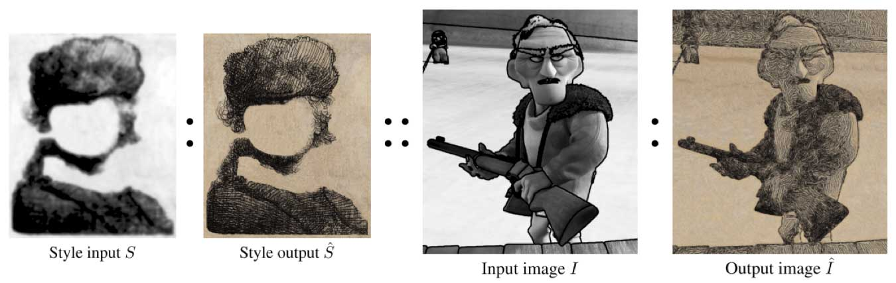
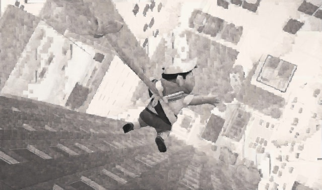
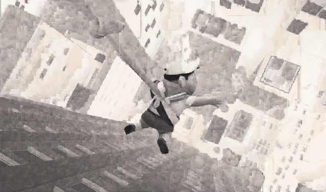

Chen Huarong i@chr.asia 25/08/14
 As shown in the figure above, example based stylization is a method of image analogy. It can apply an existing style, which is described by style input \(S\) and output \(\hat{S}\), to an input image \(I\) and synthesize the output image \(\hat{I}\).
In the past 4 weeks, I tried to synthesize \(\hat{I}\) by segmenting \(I\) into some “most like” regions and synthesize in the regions independently.
Following is a result synthesized a week ago.
The result above has no consideration of spatial coherence. I tried 3 different synthesizing methods with spatial coherence consideration.
The stylized output \(\hat{I}\) should be spatially as continuous as possible. Usually, spatial coherence is acquired by adding terms describing relations between neighbors.
In the following 3 methods, spatial coherence term is described by the similarity of small patch(with patch size of 1 to 3) in \(I\) and its correspondence patch in \(S\).
PatchMatch is an algorithm that can find approximate nearest patch neighbor in a short time. It is a process of optimizing and updating. It can be simply described by 3 steps: find a patch, calculate the distance, replace the patch if the distance is smaller.
The pixel-based synthesizing is similar to the PatchMatch’s 3 steps. When calculating the distance, we can do synthesis and check if the synthesized result has smaller distance(if not, we can restore the patch before synthesizing).
In the distance function, I take 3 terms into consideration:
Following are the results:

One of my results a week ago(see following) was synthesized by the segmentation of “most-like” regions and the result looks fragmented. Specially, for this result, I applied Gaussian blur in contours of the regions to make it look better.
| Before | After |
|---|---|
 |
Anyhow, the result is not as good as expected. What’s more, it is not suitable for stylizations that are strict in preserving details.
Gaussian blur is helpful in keeping spatial coherence in adjacent areas but will lose details. The biggest weakness of the result synthesized by “most-like” regions is the spatial coherence. To overcome it, I applied a random optimizing that has consideration of spatial coherence and acquired a better result.
The optimization is made up with several iterations. In every iteration, the algorithm randomly choose one “most-like” region and re-synthesize it pixel-by-pixel, taking the similarity of corresponding patches in \(I\) and \(S\) into consideration.
Followings are results with/without random optimizing.
| Without Random Optimizing | With Random Optimizing |
|---|---|
 |
 |
|  |  |
 |
 |
By experiments, the advantages and disadvantages of above synthesizing methods are listed as follows:
| Method | Advantages | Disadvantages |
|---|---|---|
| 3.1 | Better in the visual perception of colors. | Lose texture. Slow. |
| 3.2 | Smooth transition in region contours. Can keep texture in inner areas. | Lose details in contours. Has obvious difference between regions. |
| 3.3 | Good at keeping textures. Keep spatial coherence partially. | Relies heavily on random optimizing. Can not synthesize rotated textures. |
Common problems: The distance function(or energy function) has a significant impact to the results. Finding a good function requires much of experience.